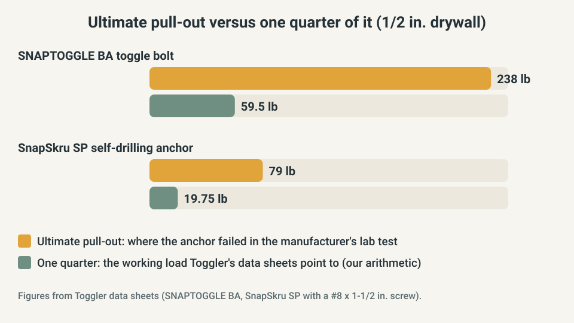
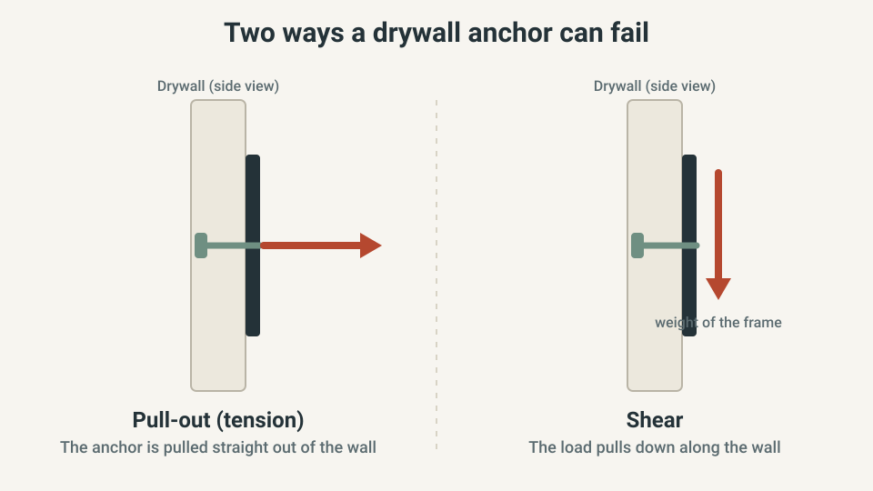
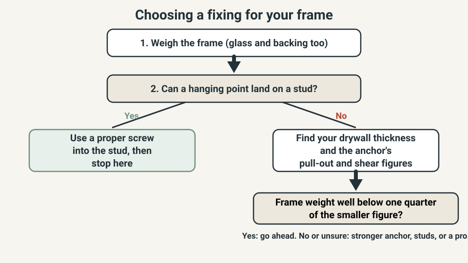

WEEKEND PROJECTS · DRYWALL ANCHORS
How Much Weight Can Drywall Anchors Hold? A Manufacturer-Based Guide
The big number on a drywall anchor package is not the weight you can safely hang. In the manufacturers' own documents it is usually the load at which the anchor failed in a lab, in one thickness of drywall.
This guide puts those lab numbers side by side for the anchors people most often use for framed art, then shows how to choose for your frame. It is a companion to our guide to hanging large wall art, which covers measuring, height and installation.
The quick answer
- The printed number is a lab failure load, not a safe load. Toggler tells people to use only a quarter of its ultimate values per anchor. ITW says to apply an appropriate safety factor but does not give one.
- Pull-out and shear are different numbers. If you are not sure which one your frame loads, use the smaller quarter figure. That is our cautious reading, not a manufacturer rule.
- Thickness matters. The same anchor holds noticeably less in 3/8 in. drywall than in 5/8 in. drywall.
- For a heavy, wide or valuable frame, a proper screw into a sound stud is usually the better route, and no manufacturer publishes one number for it.
- Over a bed, a crib or a staircase, have a professional check the plan.
I am not an engineer. Every figure here is a manufacturer's lab result, so read the package or data sheet for your exact product before you trust any number.
Quick plan
| Item | Detail |
|---|---|
| Time | About 20 minutes to weigh the frame and compare numbers |
| Cost | Free to work out; anchors usually cost a few dollars each |
| Best for | Frames and mirrors on drywall that are too heavy for a basic nail |
| Goal | Choose a fixing whose working load clearly covers your frame |
Why the number on the package is not a safe load
Every figure in the tables below is an ultimate load: the point where the anchor, or the drywall around it, gave way in a test. Toggler's data sheets say industry standards recommend using a quarter of that value. So the SnapSkru SP, tested at 79 lb pull-out in 1/2 in. drywall, comes down to about 20 lb per anchor once you apply that quarter.

ITW describes its numbers as averages from laboratory conditions that change with the age, moisture and surface treatment of the drywall, and tells users to apply appropriate safety factors. It does not say which factor. So we do not divide ITW's numbers by four and present the result as ITW's advice. We show a quarter only for Toggler, because Toggler says so.
Watch the store listings, too. Some call the same printed number a working load, while the manufacturer's sheet calls it a laboratory average. When they disagree, the data sheet wins.
Pull-out and shear: two ways an anchor fails
Pull-out (also called tension) is the anchor being drawn straight out of the wall. Shear is the load pulling down along the wall, which is what a frame's weight mostly does. Toggler publishes both for its anchors. ITW gives one figure per anchor and does not say which direction it measured, so we do not label it.

A frame hung on a stretched wire, or one that stands off the wall, pulls outward a little as well as down. Toggler also notes that holding strength drops as the load sits farther from the wall. That is why we suggest using the smaller of the two quarter figures when you are unsure.
The numbers, anchor by anchor
These are manufacturer-published ultimate loads in pounds. Nothing here is estimated.
| Anchor | Drywall | Ultimate pull-out | Ultimate shear |
|---|---|---|---|
| SNAPTOGGLE BA toggle bolt (Toggler) | 1/2 in. | 238 lb | 247 lb |
| 5/8 in. | 356 lb | 298 lb | |
| SnapSkru SP self-drilling (Toggler), tested with a #8 x 1-1/2 in. screw | 3/8 in. | 57 lb | 108 lb |
| 1/2 in. | 79 lb | 149 lb | |
| 5/8 in. | 135 lb | 178 lb | |
| Twist-N-Lock self-drilling (ITW) | 3/8 in. | 65 lb* | not stated |
| 1/2 in. | 75 lb* | not stated | |
| 5/8 in. | 80 lb* | not stated | |
| Light-duty plastic (ITW) | 3/8 in. | 25 lb* | not stated |
| 1/2 in. | 30 lb* | not stated | |
| 5/8 in. | 40 lb* | not stated |
*ITW gives one ultimate holding weight per thickness and does not say whether it is pull-out or shear.
Now the same Toggler figures divided by four, following Toggler's own guidance. These are our arithmetic, not separate test results.
| Anchor | Drywall | One quarter of pull-out | One quarter of shear |
|---|---|---|---|
| SNAPTOGGLE BA | 1/2 in. | 59.5 lb | 61.75 lb |
| 5/8 in. | 89 lb | 74.5 lb | |
| SnapSkru SP | 3/8 in. | 14.25 lb | 27 lb |
| 1/2 in. | 19.75 lb | 37.25 lb | |
| 5/8 in. | 33.75 lb | 44.5 lb |
Read it as a careful installer would. In 1/2 in. drywall, one SnapSkru SP is good for about 20 lb by Toggler's rule, and one SNAPTOGGLE BA for about 60 lb. Both figures are per anchor. A SNAPTOGGLE needs a 1/2 in. hole and 1-7/8 in. of clear space behind the wall.
Plastic anchors, stud screws, adhesive strips and picture hangers
- Plastic anchors. ITW's light-duty plastic figures (25 to 40 lb ultimate) are low even before any safety factor. Keep them for small, light frames.
- Screws into studs. No manufacturer publishes a capacity for a screw in a stud, because it depends on the screw, how deep it goes into the wood, the condition of the wood and the direction of the load. That is why there is no number for it here. Our wall art guide shows how to find studs. A proper screw in a sound stud is usually the stronger route, but it is not unlimited.
- Adhesive strips. The limit is for the whole package: its strips, its frame size and its surface. We have not verified any single package for this article, so we do not quote a number. Follow the package exactly and do not assume that more strips mean a higher limit.
- Picture hangers. 3M says its CLAW drywall picture hanger comes in packages that hold up to 15, 25, 45 or 65 lb and locks into drywall anywhere on the wall. Use the number printed on the exact package you buy.
How to choose an anchor for your frame
- Weigh the frame with its glass and backing. The bathroom scale method is in our wall art guide.
- If a hanging point can land on a stud, use a proper screw into the stud and stop here.
- Otherwise, work out your drywall thickness. Interior drywall is commonly 1/2 in. or 5/8 in. If you cannot tell, use the thinner figure.
- Find the quarter figure for your anchor and thickness, pull-out and shear. If unsure which applies, use the smaller one.
- Keep the frame well under that figure. Do not count on two anchors sharing the load evenly.

A worked example: a 40 lb frame on 1/2 in. drywall. One SnapSkru SP is about 20 lb per anchor, so even two of them (about 40 lb together, if they share perfectly) leave no margin. One SNAPTOGGLE BA is about 60 lb by the same rule, so if one of two ends up carrying most of the weight, it still stays under its quarter figure.
Why two anchors do not always double the capacity
Two anchors split the load only if both actually carry it. A frame that hangs slightly tilted, a wire that slides, or two hooks at slightly different heights can put most of the weight on one. Plan so that a single anchor could carry the load, as in the example above, and do not add the numbers when it cannot. For wide frames, a French cleat fixed into studs spreads the load along its length; the wall art guide explains how.
When the wall itself is the problem
Ratings come from tests in sound drywall. Board that is wet, soft, crumbling, cracked around the spot or badly repaired cannot be assumed to hold what a table says, and ITW's own sheet warns that the age, moisture and surface treatment of the drywall change the result. Repair the wall first, using our guide to patching a large hole in drywall, or fix into a stud instead. Mounting hooks and shelves around the house? The same logic applies in the entryway.
Common mistakes
- Reading the biggest number on the package as the weight to hang.
- Using a 5/8 in. figure on a 1/2 in. wall.
- Forgetting the weight of the glass and backing.
- Comparing a pull-out number with a shear number.
- Counting two anchors as double the capacity.
- Using the plastic anchor that came in the box for a large frame.
- Hanging over a bed or staircase without a stud or a professional check.
Frequently asked questions
How much weight can a drywall anchor hold?
It depends on the anchor and on the thickness of the drywall. In the manufacturers' lab tests used here, the ultimate figures run from 25 lb for a light-duty plastic anchor in 3/8 in. drywall to 356 lb pull-out for a SNAPTOGGLE BA in 5/8 in. drywall. Those are failure loads, not safe loads. Toggler recommends using only a quarter of its ultimate values.
Is the weight printed on the package safe to hang?
Not automatically. The number is normally the most the product held in a lab test, in one thickness of drywall. Check the data sheet for what the figure means, and keep your frame well below it.
Do I need a stud to hang a heavy frame or mirror?
Not always. Toggle bolts and some picture hangers are made for hollow drywall. For a heavy, wide or valuable piece, a proper screw into a sound stud is usually the stronger route, and over a bed, crib or staircase it is worth having a professional check the plan.
Does drywall thickness change how much an anchor holds?
Yes, and by a lot. Toggler's SnapSkru SP is tested at 79 lb pull-out in 1/2 in. drywall and 135 lb in 5/8 in. drywall. If you are not sure which you have, use the thinner figure.
Are plastic anchors fine for a large frame?
They are the weakest option here. ITW's light-duty plastic anchor is listed at 25, 30 and 40 lb ultimate in 3/8, 1/2 and 5/8 in. drywall. Keep them for small, light frames.
Keep going
- How to hang large wall art without damaging your walls
- How to patch a large hole in drywall
- A quiet entryway storage plan
- How to hang a heavy mirror on drywall
Sources and further reading
- Toggler, SNAPTOGGLE heavy-duty toggle bolts technical flyer: toggler.com SNAPTOGGLE flyer (PDF)
- Toggler, SnapSkru self-drilling drywall anchors: toggler.com SnapSkru data sheet (PDF)
- ITW Buildex, E-Z Ancor data sheet (Twist-N-Lock holding weights): ITW 6400 data sheet (PDF)
- ITW Buildex, E-Z Ancor product data (light-duty plastic holding weights): ITW E-Z Ancor product data (PDF)
- 3M, CLAW drywall picture hanger: 3m.com CLAW page
Figures last checked on November 20, 2026. Manufacturers update their documents, so confirm the numbers on the package you buy.